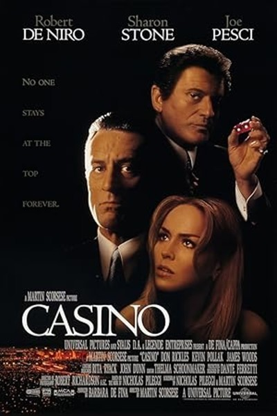
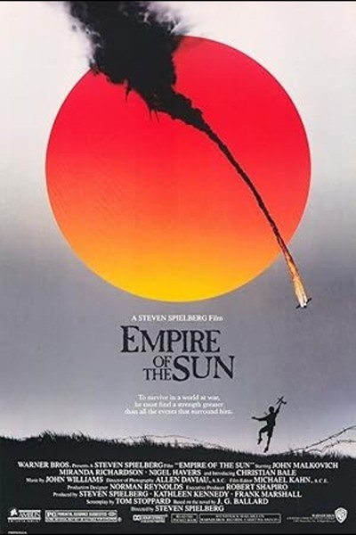
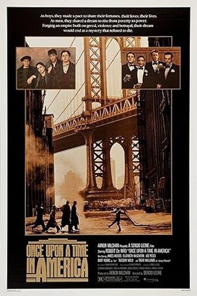
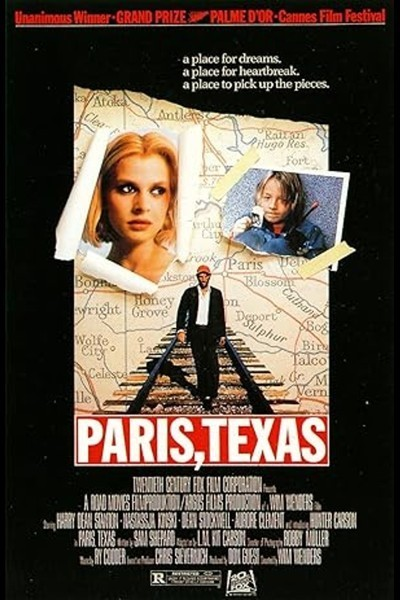
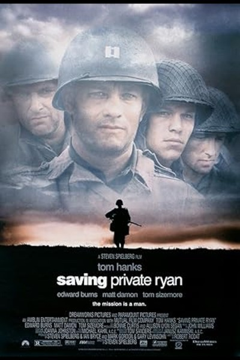
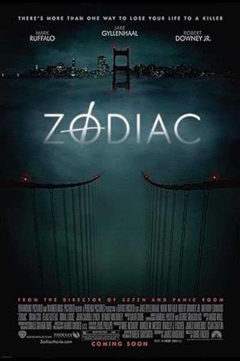

10 Things I Hate About You
Uma comédia romântica colegial que reimagina Shakespeare em um ambiente moderno. A história acompanha adolescentes lidando com amor, rebeldia e autoafirmação.

2001: A Space Odyssey
Uma jornada visualmente impressionante que explora temas de evolução, inteligência artificial e a vastidão do espaço. Um marco da ficção científica..
The Assassination of Jesse James by the Coward Robert Ford
Um jovem admira e se aproxima do famoso fora-da-lei Jesse James, mas suas intenções escondem algo mais. Um faroeste lento e profundo sobre fama e traição.

The Aviator
A trajetória conturbada do famoso magnata da aviação Howard Hughes, mostrando sua genialidade, obsessões e a pressão da fama.

Awakenings
Baseado em fatos reais, um médico ajuda pacientes catatônicos a despertarem usando um novo tratamento. Uma história comovente de esperança. --- Na Pasta---
Baby Driver
Um jovem motorista especializado em fugas de assalto vive ao som da música, mas se vê envolvido em um golpe que sai do controle. --- Na Pasta---
Babylon
Em meio à transição do cinema mudo para o falado, artistas enfrentam mudanças drásticas. Um espetáculo visual sobre excessos e sonhos. ---Numero 4 da Legenda pt do site---
Beautiful Boy
Um pai tenta ajudar seu filho a vencer o vício em drogas enquanto lida com o impacto disso na família. Drama forte e emocional ---Pb 1 no site---

Before Sunrise
Dois jovens se conhecem em um trem pela Europa e decidem passar uma noite juntos em Viena. Um filme sobre conexão e efemeridade. ---Latencia-Atraso da legenda de +10 segundos---

Before Sunset
Nove anos após um encontro marcante, duas pessoas se reencontram em Paris e refletem sobre o passado e escolhas de vida. ---Latencia-Atraso da legenda de +12 segundos---

BlacKkKlansman
Um policial negro se infiltra em uma organização racista nos anos 70. Baseado em uma história real, mistura humor e crítica social. ---Latencia-Atraso da legenda de +1 segundos---

Blade Runner
Em um futuro distópico, um caçador de androides questiona o que é ser humano ao perseguir replicantes fugitivos.

Blow
A ascensão e queda de um dos maiores traficantes de drogas dos EUA. Uma história intensa sobre escolhas e consequências.

Blue Valentine
Um retrato cru de um relacionamento que alterna entre amor profundo e desilusão. Intenso, emocional e realista.
Braveheart
Um escocês lidera a luta por liberdade contra a opressão inglesa. Épico histórico com batalhas marcantes e emoção. ---Na Pasta e com +3 de latencia---
The Brutalist
A saga de um arquiteto austro-húngaro e sua esposa em meio ao pós-guerra, misturando arte, opressão e relações humanas complexas. ---Opcao 2 de pt no Site---

Caché
Um casal francês vive sob a ameaça de segredos do passado que surgem através de fitas misteriosas. Thriller psicológico tenso. ---Na Pasta---

Casino
A história da máfia em Las Vegas, revelando os bastidores do poder, traição e ambição desenfreada. ---Opcao Pt (BR)---

Come and See
Um garoto entra para a resistência durante a Segunda Guerra e presencia os horrores do conflito. Um retrato cru e marcante sobre os traumas da guerra. ---Na Pasta---

Dallas Buyers Club
Baseado em fatos reais, mostra a luta de um homem com AIDS que desafia o sistema em busca de tratamento e dignidade. ---Opcao (pb)---
The Dark Knight
O confronto entre o Batman e o insano Coringa mergulha Gotham no caos. Um dos filmes mais aclamados do gênero. ---Opcao pb 1 com +1.5 segundos de atraso---

The Deer Hunter
Amigos de infância são marcados pela guerra do Vietnã, em uma história poderosa sobre trauma, amizade e sacrifício. ---Opcao Pt (BR) com latencia de +22 segundos---

Donnie Brasco
Um agente do FBI se infiltra na máfia e desenvolve laços profundos com seu alvo. Um dilema moral envolvente. ---Na pasta com a latencia de -1 segundos---

Donnie Darko
Um adolescente problemático começa a ter visões perturbadoras e questiona sua sanidade e o tempo. Cult psicológico.

Elite Squad
A rotina de um grupo de elite da polícia do Rio, mostrando o combate ao tráfico e a corrupção. Intenso e realista.

Elite Squad
Continuação direta do primeiro filme, foca nas consequências políticas e sociais da guerra contra o crime organizado.

Empire of the Sun
Um garoto britânico é separado dos pais na China durante a Segunda Guerra Mundial. Uma visão infantil do caos da guerra. ---Na Pasta---

Everything Everywhere All at Once
Uma mulher comum é lançada em um multiverso onde precisa enfrentar versões alternativas de si mesma. Criativo e caótico. ---Opcao pb---
Eyes Wide Shut
Um casal entra em um jogo psicológico após revelações íntimas. Um mergulho nos segredos do desejo humano. ---Na Pasta---
Fargo
Um sequestro mal planejado desencadeia uma série de eventos trágicos em um cenário gelado e cômico. Humor negro e crime. ---Opcao (pb) latencia -5 segundos---
A Few Good Men
Um jovem advogado enfrenta um caso militar que desafia sua ética e coragem. Drama jurídico tenso. ---Na Pasta---
The Florida Project
Uma menina vive com a mãe em um motel perto da Disney, mostrando a infância à margem da sociedade. Comovente e real.
Full Metal Jacket
A transformação de recrutas em soldados endurecidos pela guerra do Vietnã. Crítica feroz ao militarismo. ---Na pasta com latencia +3 segundos---
The Gentlemen
Criminosos sofisticados e jogos de poder no submundo britânico. Estilo e ação com humor afiado.
The Girl with the Dragon Tattoo
Uma hacker e um jornalista investigam um crime antigo, revelando segredos obscuros. Thriller investigativo intenso.
The Good, the Bad and the Ugly
Três pistoleiros disputam um tesouro durante a Guerra Civil Americana. Faroeste épico com cenas icônicas.

Gran Torino
Um veterano amargurado confronta seus preconceitos ao ajudar um jovem vizinho. Reflexivo e comovente.

Groundhog Day
Um repórter revive o mesmo dia inúmeras vezes, aprendendo sobre si mesmo e o mundo. Comédia com filosofia.

The Handmaiden
Uma jovem é enviada para servir uma herdeira japonesa e segredos emergem. Esteticamente deslumbrante e misterioso.

The Hateful Eight
O destino de oito forasteiros se cruza em uma cabana isolada após a Guerra Civil. Tensão crescente e diálogos afiados.

The Hunt
Um professor enfrenta uma comunidade após acusações sérias. Um estudo sobre moral, dúvida e julgamento.

Killing Them Softly
Após um assalto durante um jogo de pôquer, um matador é contratado para restaurar a ordem. Um olhar frio e direto sobre o crime e o sistema..

Life Is Beautiful
Um homem tenta proteger seu filho dos horrores da guerra com imaginação e amor. Emocionante e inesquecível..

The Lord of the Rings: The Fellowship of the Ring
Um grupo improvável embarca em uma jornada para destruir um anel poderoso. Início de uma saga fantástica.

The Lord of the Rings: The Two Towers
A irmandade se separa, cada um enfrentando desafios únicos enquanto o mal cresce. Continuação épica. ---Na Pasta---

The Lord of the Rings: The Return of the King
A batalha final pela Terra Média se aproxima, testando coragem, amizade e esperança. Conclusão grandiosa. ---Server MAX---
Lord of War
Um traficante de armas questiona sua moralidade ao longo de sua carreira no mercado negro. ---Server MAX---

Mad Max: Fury Road
Num mundo pós-apocalíptico, uma mulher e um guerreiro solitário enfrentam tiranos em uma perseguição explosiva no deserto. ---Server MAX---

Magnolia
Diversas histórias interligadas expõem os dramas de pessoas comuns tentando se conectar e encontrar sentido
Midnight in Paris
Um roteirista em crise é transportado magicamente para uma Paris de outra época, onde encontra inspiração e reflexão.
Monty Python and the Holy Grail
Uma sátira absurda que acompanha cavaleiros em uma busca sagrada repleta de humor nonsense.
Mulholland Drive
Uma atriz e um aspirante a diretor vivem uma relação intensa enquanto lidam com frustrações e segredos..
New Jack City
A guerra contra o tráfico de drogas em Nova York toma forma com um policial determinado a limpar as ruas.

Notting Hill
Um livreiro britânico conhece uma atriz famosa e vive um romance improvável em um bairro charmoso de Londres. ---Server 4K UK Na Pasta com Latencia de +9.5 segundos---
Oldboy
Um homem preso por 15 anos sem explicações busca entender os motivos e enfrenta revelações perturbadoras.

Once Upon a Time in America
A trajetória de um jovem em meio ao crime, amor e redenção na Nova York do século XX.

Paris, Texas
Um homem reencontra o filho após anos e parte em uma jornada emocional pelos Estados Unidos.

The Pianist
Um pianista judeu luta para sobreviver durante a ocupação nazista em Varsóvia.

Portrait of a Lady on Fire
Durante o final do século XVIII, uma pintora é contratada para retratar uma jovem prestes a se casar, e algo inesperado nasce entre elas.

The Princess Bride
Um conto de fadas irreverente que mistura aventura, romance e humor em uma jornada épica. ---Server 4K UK latencia de -4 segundos---

Public Enemies
A caçada de um criminoso carismático durante a era da Grande Depressão, envolvendo agentes federais e assaltos lendários

Pulp Fiction
Histórias entrelaçadas no submundo de Los Angeles criam um mosaico de violência, redenção e cultura pop
Rain Man
Dois irmãos redescobrem a ligação familiar ao atravessar os Estados Unidos em uma jornada emocional e reveladora
Reservoir Dogs
Um assalto dá errado e o grupo de criminosos começa a desconfiar que há um traidor entre eles.

Saving Private Ryan
Durante a Segunda Guerra, um grupo parte em uma missão quase suicida para resgatar um único soldado. ---Na Pasta---

Schindler's List
A história real de um homem que salvou centenas de judeus usando sua fábrica como abrigo. ---Na Pasta---

The Shining
Uma família isolada em um hotel enfrenta fenômenos estranhos e assustadores durante o inverno.
Snatch
Um roubo de diamantes toma rumos inesperados com personagens excêntricos e muita ação britânica..

Society of the Snow
Após um trágico acidente nos Andes, um grupo tenta sobreviver em meio a neve e dilemas morais.
Spotlight
Jornalistas investigam uma série de abusos encobertos pela Igreja, revelando um escândalo devastador

Stand by Me
Quatro amigos adolescentes fazem uma trilha em busca do corpo de um garoto desaparecido e vivem momentos decisivos. ---Na Pasta---

Terminator
Um ciborgue assassino viaja do futuro para eliminar um alvo, mas um soldado o segue para impedi-lo. ---Latencia +29 segundos---

Terminator 2: Judgment Day
Na sequência eletrizante, um novo exterminador é enviado para proteger um garoto-chave para o futuro da humanidade.

The Boy in the Striped Pyjamas
Com a Segunda Guerra Mundial como centro, a história é contada através dos olhos do Bruno, o filho de um comandante de um campo de concentração, sobre sua amizade com um menino judeu. ---Na Pasta---

The Thing
Uma equipe de cientistas na Antártica descobre uma criatura alienígena capaz de imitar qualquer ser vivo.
Titanic
Dois passageiros de diferentes classes se apaixonam a bordo de um navio condenado ao naufrágio. ---Na Pasta com Latencia de +10 segundos---
Trainspotting
Jovens usuários de drogas na Escócia enfrentam os altos e baixos da vida e suas escolhas impulsivas. ---Na Pasta com Latencia de +4 segundos---

True Grit
Um homem determinado busca vingar a morte do pai enfrentando os desafios do Velho Oeste. ---Server Echo Latencia de +4.1 segundos---

Uncut Gems
Um joalheiro viciado em apostas corre contra o tempo para quitar suas dívidas e manter o controle da própria vida.

Unforgiven
Um pistoleiro aposentado é forçado a pegar em armas novamente em uma missão de vingança e redenção.
The Untouchables
Uma equipe liderada por Eliot Ness tenta derrubar o império do crime de Al Capone durante a Lei Seca

The Usual Suspects
Um detetive interroga um grupo de criminosos e descobre uma narrativa cheia de reviravoltas e truques.
The Whale
Um professor de inglês recluso tenta se reconectar com a filha enquanto lida com questões profundas de saúde e culpa.

You Were Never Really Here
Um veterano de guerra, traumatizado, trabalha resgatando meninas de redes de tráfico. Em meio à missão, ele se vê afundando cada vez mais na violência e no caos.

Zodiac
Jornalistas e investigadores perseguem um serial killer em uma caçada cheia de tensão e mistério real
The Zone of Interest
Durante a Segunda Guerra, a vida de um comandante nazista e sua família é retratada à sombra de um campo de concentração.

Malcolm X
A biografia épica de Malcolm X, líder afro-americano que se tornou uma figura influente no movimento pelos direitos civis, desde sua juventude conturbada até sua conversão ao Islã e ativismo político.

Heat
Um experiente ladrão e sua equipe planejam seu último assalto, enquanto um detetive de polícia obstinado os persegue incansavelmente.

Carlito's Way
Um ex-traficante de drogas recém-saído da prisão tenta levar uma vida honesta, mas é arrastado de volta ao mundo do crime por seus antigos colegas.

Demolition
Um banqueiro de investimentos bem-sucedido lida com a morte repentina de sua esposa desmantelando sua própria vida e buscando uma nova perspectiva.

Stalker
Um guia, um escritor e um cientista embarcam em uma jornada perigosa para a "Zona", uma área misteriosa onde se acredita que desejos possam ser realizados
Casino Royale
James Bond, em sua primeira missão como 007, precisa deter um banqueiro de terroristas em um jogo de pôquer de alto risco em Montenegro

One Day
Emma e Dexter se encontram pela primeira vez na noite da formatura da universidade e, a partir daí, suas vidas se entrelaçam em um dia específico a cada ano, ao longo de duas décadas.

Arrival
Uma linguista é recrutada pelo governo para se comunicar com alienígenas que chegaram à Terra, em uma tentativa de entender sua intenção e evitar uma guerra global.

The Perks of Being a Wallflower
Um estudante tímido e introvertido começa o ensino médio e encontra amizade e aceitação em um grupo de veteranos excêntricos.

American History X
Um ex-líder de gangue neonazista tenta impedir seu irmão mais novo de seguir seus passos após sair da prisão e refletir sobre suas ações passadas.